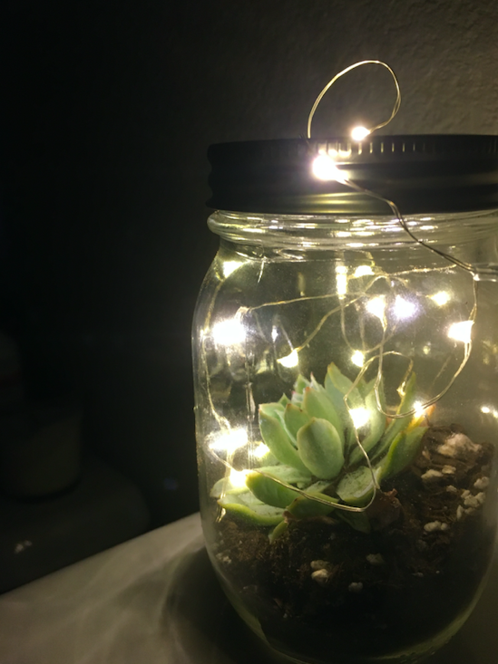
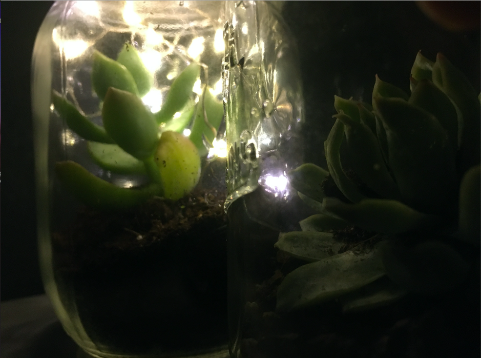
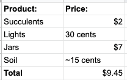

We got the idea to make our glow jars because in quarantine, we found that we were bored and stressed. Seeing all the nature outside gave us the idea: Since we can't go outside, why not bring a bit of it in? Our product is a live succulent in a jar with beautiful lights to go along with it. There are different types of succulents and they all look amazing! The lights are attached to the underside of your jar lid and you can turn them on and off whenever you would like!



Thank you for showing interest in our product!